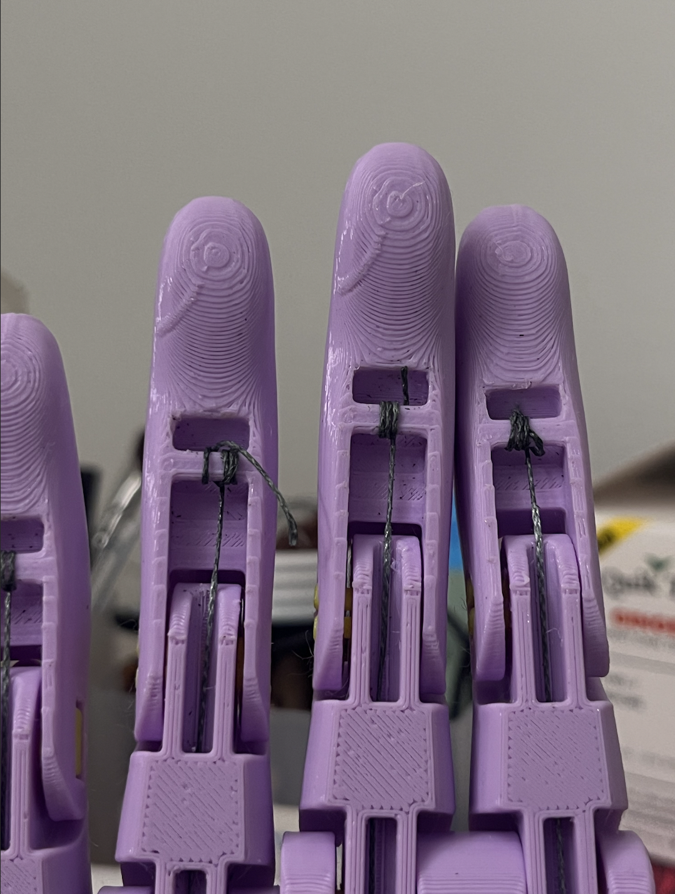
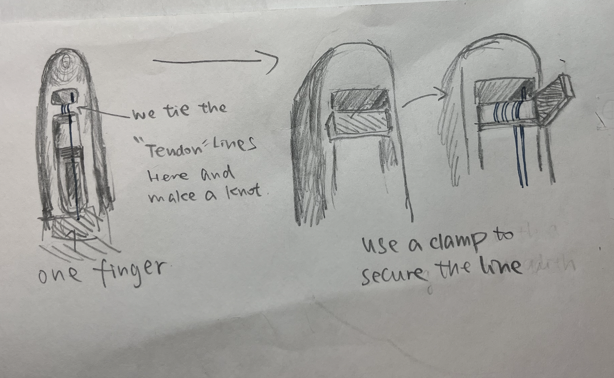
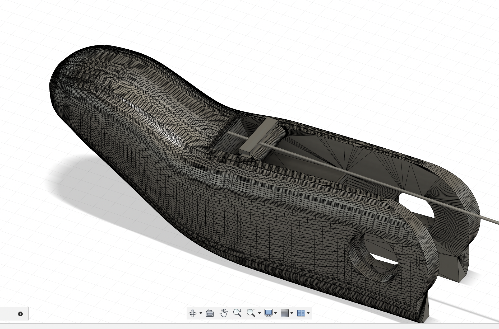
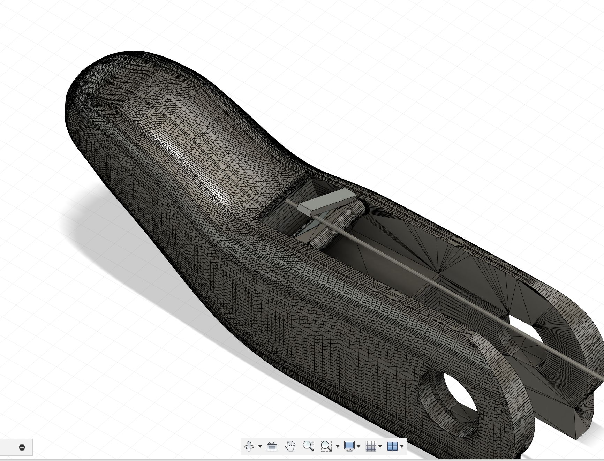
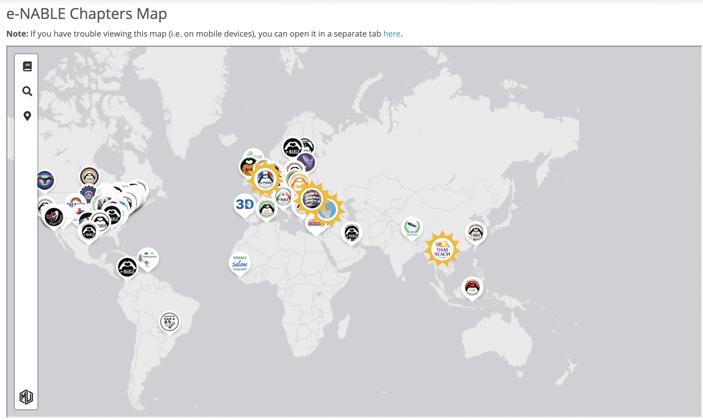
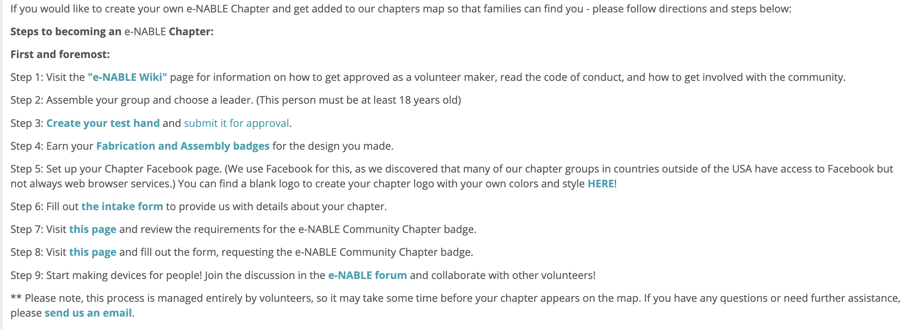

Improve the original hand model:
One of the most difficult parts of the assembly was tying and making a knot at the end of each finger with the line.
The hole on the finger was too small to easily thread the line through. Additionally, it was difficult to tie a knot in such a limited space.

This might not be a major problem if it only occurred once during assembly. However, the knots actually need to be tied repeatedly during testing and even in the usage process.
The length of the removable line determines the movement range and speed of each finger. Therefore, several more knots need to be tied on each finger when figuring out the best movement of the fingers.
Since it is so frustrating to untie and retie the knot, I tried to design a clamp to replace the knot. It is positioned exactly where the knot would be and can secure the line.

Sketch in Fusion:


- - - - - - - - - - - - - - - - - - - - - - - - - - - - - - - - - - - - - - - - - - - - - - - - - -
Reflection on the project:
This was my first time working on a real project related to disability, and it was a rewarding experience that prompted deep reflection on ethics, psychology, and design.
I was genuinely touched and impressed by the e-NABLE community, especially when reading about their origin and history.
The community began with its founder helping a carpenter who had lost his fingers to create a prosthetic hand. It has since grown into a vast hub, connecting volunteers with those in need of prosthetic devices.
For me, two features of this organization stand out the most.
First is the open and easy-to-use resources. These resources remove the barriers of time and space, making it easier for people who print the prosthetics to connect with those who need them. This has turned the project into a global, efficient, and accessible initiative. The models are also well-designed, easy to print and assemble, which adds an educational element to 3D printing. As a result, more educators and students (like myself) can get involved, playing dual roles as both volunteers and learners. It’s a mutually beneficial relationship.
The second point is the community’s operational and expansion model. While their website may not be the most fancy, it is clear and comprehensive. I was particularly struck by how clearly the instructions are written on how to establish a local e-NABLE chapter.


(One small suggestion of the assemply vedio that e-NABLE provided: Different part of hand can be better printed in different corlors. So that users might not get confused by many similarly-looked components.)
When reflecting on creating a prosthetic hand for someone without fingers or an upper palm, two points from the course readings resonated with me deeply.
"The rise of modern statistics led to the creation of the bell curve, which allowed scientists to map human traits and classify individuals as 'normal' or 'outliers.' This marked a shift from unattainable ideals to comparisons based on observable averages, making 'normal' a key concept in understanding human development and health."[1]
As Hendren mentioned, equating "normal" with "the majority" is a modern and somewhat biased interpretation. Applying this idea to disability design, it made me think that some common or intuitive approaches might not be the best. Specifically, for a prosthetic hand, it doesn’t necessarily have to resemble a physiologically human hand.
Insisting on making it look like a "normal hand" is unnecessary.
For me, an ideal design should be based on the real functions of a prosthetic hand, the properties of the materials used, the level of sophistication achievable with current production technology, and the budget. Its resemblance to a real hand might be secondary to these factors.
Reflecting on the e-NABLE hand I just made, since it only has a basic grabbing function without control over individual finger movement, it doesn’t even need to have five fingers. Given the limitations of 3D-printing technology and the need for convenience in production, it might be possible to design a more functional, though less "normal," version of the e-NABLE hand.
However, Chris's point in Hendren's book brings another perspective. He initially considered fully automating the diaper-changing process with a robot. But his wife Melissa reminded him that diaper time is not just a task but also a valuable moment for parent-child bonding.[1]
This reminds me that users' psychological needs are also crucial in design. A prosthetic hand that looks more like a "real hand" might fulfill a user's psychological desire to "look healthy."
In general, the readings have revealed to me the more complex nature of what constitutes "good design." And balancing functionality, user psychology, and aesthetics remains a central challenge in design.
References:
[1] Hendren, S. (2020). What Can a Body Do? Penguin Publishing Group.